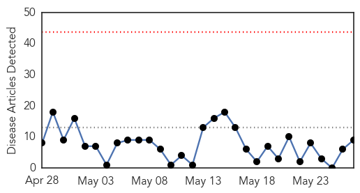
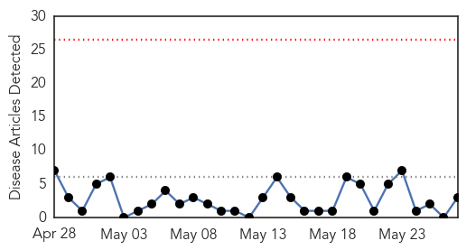

Measles
30-Day Web Trend
0 alerts, 0 warnings

30-Day Twitter Trend
0 alerts, 0 warnings

Article Locations

Article Confidences

Top Articles:
- 0.967
- Office Visit: Travel safely this summer
- 0.878
- Measles spike: Samples to be tested for virus mutation
- 0.877
- Saving face: DG health stands by measles vaccine
- 0.811
- Virginia Department of Health confirms second case of measles
- 0.801
- Marshall Islands on high alert after measles outbreak in Federated States of Micronesia
- 0.729
- Visualizing global progress in reducing the burden of measles
- 0.685
- CMAJ : Canadian Medical Association editorial calls for national vaccination strategy
- 0.663
- MSF Calls for Refugee Assistance Cameroon
- 0.617
- SOMALIA: Mass measles vaccination campaigns urgently needed
Top Tweets:
-
No tweets found for May 27, 2014
Dengue Fever
30-Day Web Trend
0 alerts, 0 warnings

30-Day Twitter Trend
1 alerts, 0 warnings

Article Locations

Article Confidences

Top Articles:
Top Tweets:
-
No tweets found for May 27, 2014